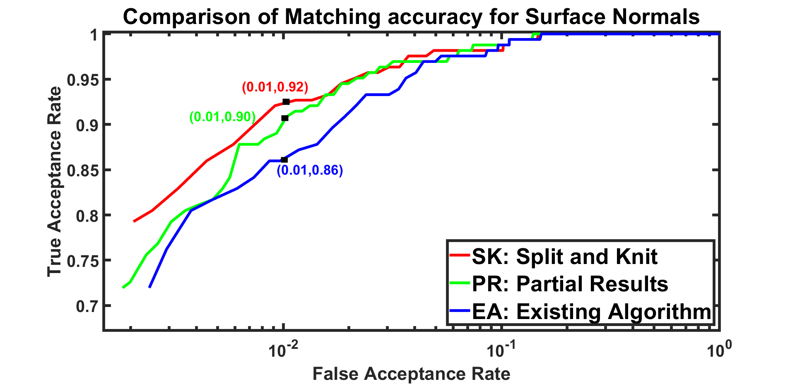
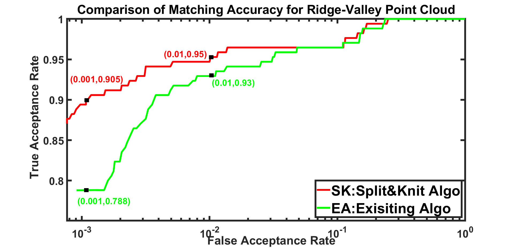

Reconstruction Steps
Output Glimpse
Qualitative Comparison

Qualitative Comparison: a) Comparison of the front view and side view of the phalange point cloud produced by SnK: (Split-and-Knit), PR: (Partial Result), EA: (Existing Algorithm). The EA considers fingers to be lambertian and reconstructs using grayscale images leading to undetailed fingerprints and distorted global shape. The PR is the intermediate result obtained after reducing the non-lambertian nature before extracting the ridge-valley and adding global shape leading to a detailed fingerprint but distorted global shape. The SnK gives the best result with a detailed fingerprint and proper global shape. b) Comparison of zoomed ridge-valley point cloud for SnK and EA. SnK retrieves superior quality ridge-valley point cloud.
Surface Normal Matching usng LBP features

ROC curves for matching fingerprint surface normals for SnK: Split-and-Knit algorithm, PR: Partial Result after reducing the non-lambertian nature of finger image with the distorted overall shape, and EA: Existing Algorithms output based on the photometric stereo. The best ROC curve and 92%TAR @ 0.01FAR are obtained for SnK, displaying its highest reconstruction quality.
Ridge-Valley Point Cloud Matching usng LBP features

ROC curves for matching ridge-valley point cloud obtained from SnK: Split-and-Knit algorithm and EA: Existing Algorithms based on the photometric stereo. The 95% TAR @ 0.01 FAR and 90.5% TAR@0.001 FAR of SnK as opposed to 93% TAR @ 0.01 FAR and 78.8% TAR @ 0.001 FAR of EA proves the high quality of the ridge-valley pattern by SnK.